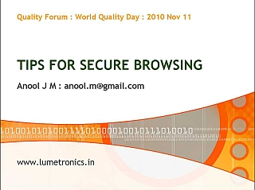
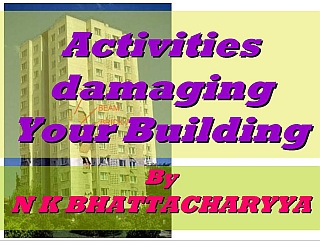

EVENTS 2010
Quality Forum conducts many
programs, lectures, seminars and events, sometimes in association with
other leading organizations.
For future programs, please look at the EVENTS page.
For more information about some of the events conducted in the past, please visit the EVENTS page, and then select the year.
Lead Auditor Course for ISO 9001:2008
"Quality Forum organized a Lead Auditor Course for ISO 9001:2008 in Mumbai from 20 to 24 September 2010. This was an IRCA Registered course of Nigel Bauer & Associates, UK. The course was conducted by FICCI Quality Forum, New Delhi. There were 20 participants, which is the maximum permissible under IRCA norms. 7 participants were from Bangladesh, who were sponsored by the International Trade Centre of UNCTAD/WTO, the Geneva based UN Organization. The effectiveness of the training resulted in all the 20 participants passing the written examination. S.C. Arora, the Principal Consultant of FICCI Quality Forum and IRCA Registered Lead Auditor was the faculty for the course while B. Bhattacharya, Hon. Secretary, Quality Forum was the co-faculty."
South Indian Education Society (SIES)
On Wednesday, 17 March 2010, B. Bhattacharya, Hon. Secretary accompanied by G. Natarajan conducted a half-day seminar on “Measurement Management System” for the selected faculty and students of the School of Packaging of the South Indian Education Society (SIES) in Nerul, Navi Mumbai.
5th National Quality Conclave
B. Bhattacharya, Hon. Secretary participated in the 5th National Quality Conclave in Delhi on 19 & 20 February 2010. Following were the learning points of based on his interactive participation in the Quality Conclave:
For future programs, please look at the EVENTS page.
For more information about some of the events conducted in the past, please visit the EVENTS page, and then select the year.
NOVEMBER 11, 2010 |
WORLD QUALITY DAY |
|
Quality Forum celebrated it's
2nd World Quality Day on Thursday, November 11, 2010 at Hotel
Atithi, Santa Cruz Airport, Mumbai.
The function started at 7.00 pm. First, Mr. Bausdev Bhattacharya welcomed all guests and explained the purpose of the World Quality Day. He also informed the august gathering that Quality Forum had arranged lecture-presentation of two eminent professionals, who are a part of Quality Forum and welcomed the speakers with a bouquet of flowers. Thereafter, he handed over the reins to Mr. G. Natarajan to conduct the programme. Mr. G. Natarajan introduced the first speaker, Mr. Anool Mahidharia, who is an Electronics Engineer by qualification and Director of Lumetronics. He then invited Mr. Anool to enlighten the audiences on “TIPS FOR SECURE BROWSING” through his presentation. Mr. Anool explained various threats like viruses, Trojans, Phishing etc. that are likely to damage the computer and are also likely to steal sensitive personal information. He also explained through his presentation how to identify the phishing websites that may steal the personal data and sensitive information like Bank Account or Credit Card details, Log-in Ids and Password of the user’s email account, etc. He explained the way these threats can be mitigated by use of soft-wares like Anti-Virus software, Internet Security Software, etc. His lecture was quite interesting and informative. After Mr. Natarajan, Mr. P. P. Ramakrishnan introduced the second speaker, Mr. N. K. Bhattacharyya, one of the renowned Civil Engineers, who is providing his expertise as a structural engineer. Mr. Bhattacharyya’s presentation was on “ACTIVITIES DAMAGING YOUR BUILDING”. He explained all the activities that are damaging a building in a very witty way. These activities included washing the floor causing water seepage through gaps in tiles to vibrations caused due to stroking the clothes in the bathrooms. He also explained the way water seepages cause damage to the buildings and the ways to prevent it. Both the lectures were found interesting by the audiences, which was evident from a lot of questions that needed to be answered by both the speakers during Question-Answer Sessions as well as during the dinner that followed the presentations. The programme ended with a vote of thanks by Mr. P. P. Ramakrishnan and was followed by a scrumptious dinner. |
| Presentation #1 : | |
| Tips for Safe Browsing :: pdf file :: 1.1MB | |
|  | |
| Presentation #2 : | |
| Activities damaging your Building :: pdf file :: 120kB | |
|  | |
SEPTEMBER 20~24, 2010
Lead Auditor Course for ISO 9001:2008
"Quality Forum organized a Lead Auditor Course for ISO 9001:2008 in Mumbai from 20 to 24 September 2010. This was an IRCA Registered course of Nigel Bauer & Associates, UK. The course was conducted by FICCI Quality Forum, New Delhi. There were 20 participants, which is the maximum permissible under IRCA norms. 7 participants were from Bangladesh, who were sponsored by the International Trade Centre of UNCTAD/WTO, the Geneva based UN Organization. The effectiveness of the training resulted in all the 20 participants passing the written examination. S.C. Arora, the Principal Consultant of FICCI Quality Forum and IRCA Registered Lead Auditor was the faculty for the course while B. Bhattacharya, Hon. Secretary, Quality Forum was the co-faculty."
MARCH 17, 2010
South Indian Education Society (SIES)
On Wednesday, 17 March 2010, B. Bhattacharya, Hon. Secretary accompanied by G. Natarajan conducted a half-day seminar on “Measurement Management System” for the selected faculty and students of the School of Packaging of the South Indian Education Society (SIES) in Nerul, Navi Mumbai.
FEBRUARY 19~20, 2010
5th National Quality Conclave
B. Bhattacharya, Hon. Secretary participated in the 5th National Quality Conclave in Delhi on 19 & 20 February 2010. Following were the learning points of based on his interactive participation in the Quality Conclave:
- The Govt. had estimated in 2008 that there would be a worldwide shortage of 55 Million skilled workers in the next 10 years. As against this, India will have a surplus workforce of 43.5 Million during this period, which will need skill development so that they can fill in the vacuum.
- A National Policy on Skill Development has been formulated by the Ministry of Labour & Employment and which has been approved by the Cabinet in its meeting held on 23rd February, 2009
- In the current scenario, Industry driven economy is giving way to knowledge based economy. Also, service economy accounts for nearly 50% of the country’s economic well being
- National Council on Skill
Development headed by the Prime Minister has target an ambitious
objective of creating 500 million skilled people by 2022.
However, though there is a massive Govt. initiative for skill
development, there is also a shortage of trainers in the country